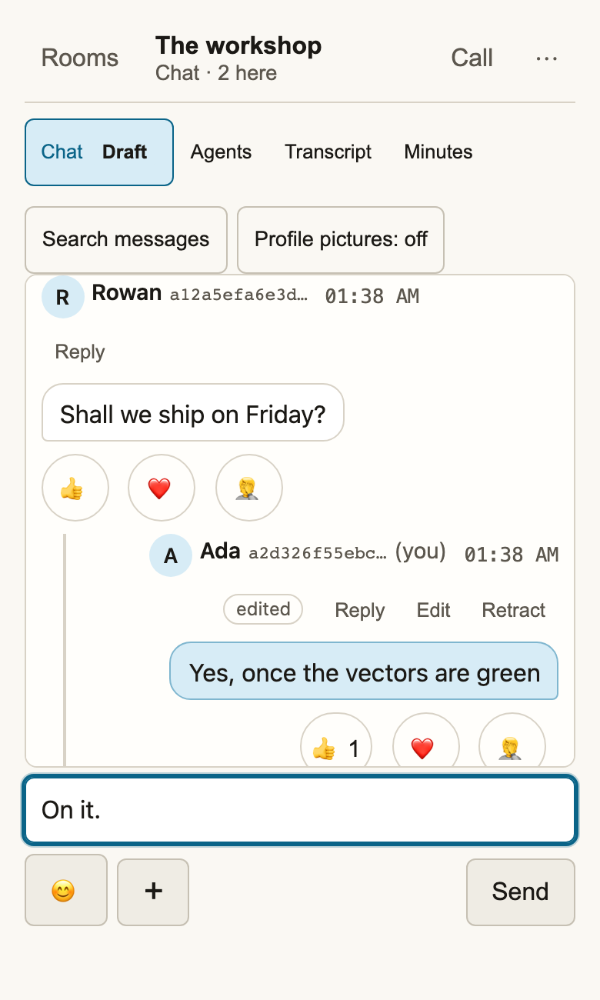

Rooms that stay open
A new room is a group by default. It can sit empty for days and still let the next person in from the link. Come back to the messages, the files and the channels inside it.
Your people. Your workspace.
Rooms, shared files and calls for your team, with agents that sit in them as members. Encrypted end to end, with no company in the middle.
An invitation is all you need to visit.
No account or installation required.

Not a meeting link
The conversation, the files and the people stay put between calls. Pick up where you left off, from whichever device is in your hand.
A new room is a group by default. It can sit empty for days and still let the next person in from the link. Come back to the messages, the files and the channels inside it.
An agent joins from the same link a person does, labelled as an agent and carrying proof of whose it is. It hears your microphone only when you switch that on, and it asks permission in the room, where everybody sees the answer. A scribe can write the minutes.
Use your phone for the camera and your laptop for a screen share. Pair them from Room details and appear together as one participant, with one active microphone.
Turn on your microphone or camera from the room you're already in, or share your screen from a supported desktop browser. Calls go device to device where the network allows, and anything that has to carry them in between is never given the room's key.
Files are encrypted on your device before upload. Their keys travel inside the room's encrypted messages. Opening a conversation doesn't download its files.
Sign in with Nostr to save encrypted room bookmarks through your signer. Visitors can keep shortcuts in this browser. Search a conversation by words, person or file name and jump back to the message.
Room's open. Send the link.
Open KithMoot, give your room a name if you like, and choose what people should call you. It's a group by default, so it stays open when everybody leaves.
Go in, open Room details and share the invitation. Anyone who receives it can request admission, so send it through a conversation you trust.
Write a message, drop in a file, invite an agent or open the call controls. Camera and microphone start off. A group admits the next person with nobody online; a temporary meeting needs a member around to answer its link.
Know what you're sharing
KithMoot uses infrastructure you can choose. A room names its relays and connection helpers, none of them holds the guest list, and the code is open to inspect.
Read how it worksRelays can't read room messages or participant names from room events. They can still see device keys, opaque room identifiers, timing and traffic volume.
The part after the # stays out of ordinary website requests. Whoever receives the full link can use it. Changing the invitation stops future use by cooperating clients; it doesn't remove people already admitted.
Camera and microphone start off, and agents hear neither until you switch that on. Public profile lookups and notifications are optional. Background blur can miss edges and movement, and a failed effect can show the unmodified camera.
Use the screen you've got
The web app is the quickest way into a room. The native Android client is an earlier implementation with fewer features.
Web app
Rooms, files and calls in your browser, with desktop screen sharing where supported. Install KithMoot from your browser's menu to keep it on your home screen or dock.
Open the web appAn internet connection is needed to reach the room. Installation caches the app's shell, not an offline copy of your conversations.
Android · preview
Android 8.0 or later. Version 0.4.0 adds persistent groups: join while everyone is away and return to your saved rooms. Searchable chat, emoji reactions and the expandable screen viewer are included.
Debug-signed preview. This is a development build with incomplete feature coverage. You'll need to uninstall it before moving to a build signed with a release key.
Download Android previewRelease notes and sourceA few practical questions
Something isn't behaving as expected? Room details has a bug-report tool. You can also report an issue on GitHub.
That's the aim: rooms, files, calls and agents, with no company running it. Threads, message editing, direct messages, a full archive and phone notifications aren't built yet. They're next, in that order, and the changelog says what has shipped.
No. Follow an invitation and choose a name. If you already have a Nostr key, sign in through your signer to use that identity and save room bookmarks across devices. Signers without encryption support keep bookmarks local.
The invitation may have expired or been replaced, or there may be nobody online to answer it. Ask the person who sent it to open the room and send you a current link. Saving a room bookmark doesn't guarantee future access.
You can open the web app for chat and calls. Screen sharing from iOS isn't supported by this app. There isn't a native iOS app yet.
A group does: it admits the next person from the link with nobody online. A temporary meeting needs an admitted member online to answer its link. A keeper can run a room with named channels, removals and nudges; it runs on somebody's own computer or server.
A room run by a keeper can name hosts who remove members or close the room. Removal changes the room key for the remaining devices. It can't erase messages somebody already received. Changing a normal invitation alone doesn't remove members.
Chat loads up to 500 messages from the last 30 days; relays may retain older encrypted events. Search covers what the conversation has loaded. Large calls depend on available bandwidth and routing, and haven't been validated at arbitrary room sizes. Android has fewer features, including incomplete support for room key changes. These are limits to check for your use, not promises covered by a green test suite.